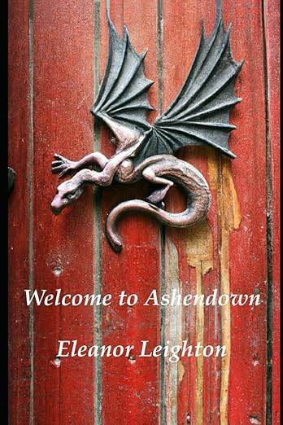
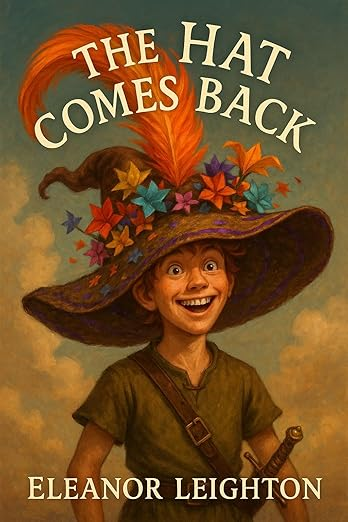

Welcome to Ashendown: Book I of the Emmerian Chronicles
Eleanor T. Leighton
Fifteen year-old Emmerian Storlock is on the verge of choosing his future career path when disaster strikes his hometown. Magic, that mysterious force that intertwines subtly with almost every part of life in the country of Mylloria, has been acting strangely lately. Rising magic levels throughout his country have caused dangerously large spontaneous magical outbreaks called Events to pop up unexpectedly all over the place. The luckless Emmerian is caught in the wrong place at the right time when an Event manifests itself in the form of a very hungry hundred-foot tall mud demon. In order to save his life, Emmerian pulls out all the stops… and lives! Surviving a disaster like that would usually be a great thing, but unfortunately there were witnesses to his heroic act. Now everyone in his hometown (including his tyrannical mother) is convinced that he’s about to become a great adventurer! …Except that he doesn’t want to be one. He starts plotting…
Available in ebook and trade paperback from Amazon.

The Hat Comes Back: Book II of the Emmerian Chronicles
Eleanor T. Leighton
Emmerian Storlock has finally plotted and schemed his way into Ashendown College, the greatest (and only formal) school for mages in Mylloria! What’s even better is that he has also managed to survive the archdemon that mysteriously popped up out of nowhere the day he arrived with a little help from his new friends. Now all that he has to do is to survive four years of studying magic while being taught by the highly whimsical master mages in residence. Simple enough, right? Emmerian’s just wondering where all the (uncannily familiar) adventurers, deadly assassins, and dangerous mage politics are coming from…
Available in ebook and trade paperback from Amazon.